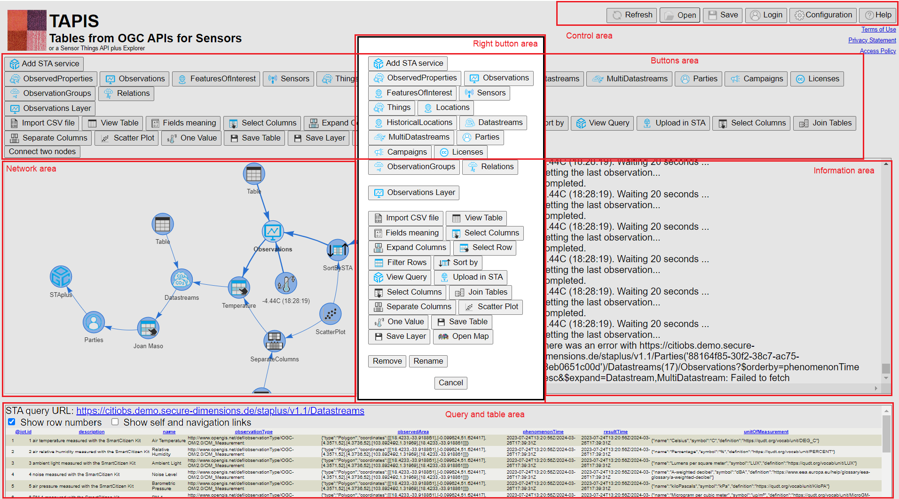
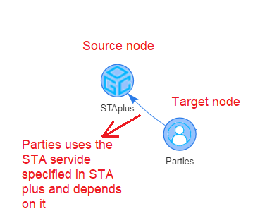
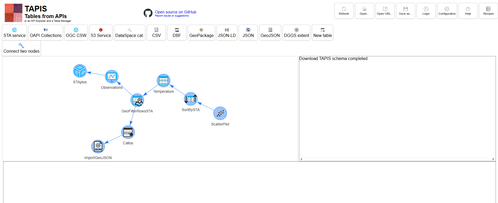
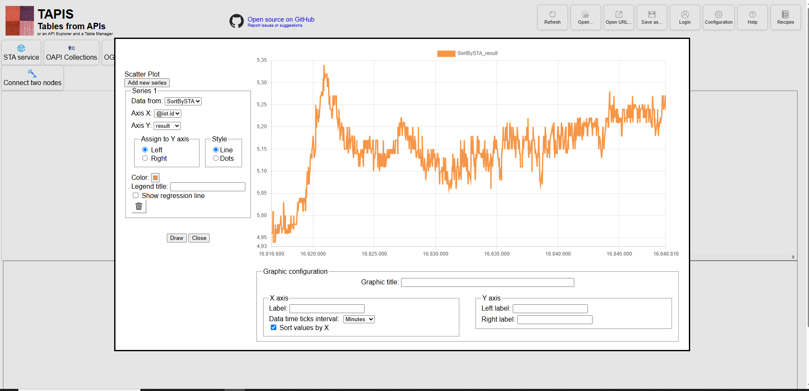

How TAPIS Works
TAPIS is a API explorer and a table manager. TAPIS reads data and metadata from some supported APIs and some data file formats and structures the data as tables that can be managed and transformed. Internally, everything is a table that has columns that represents fields and rows that represent records.
The supported data sources are: Sensor Things API, STAplus, OGC API Features/Records, OGC Catalogue Service for the Web, S3 Services, Eclipse Data Connectors, CSV, DBF, JSON-LD, JSON and GeoJSON files. Once the data is represented as a table, it can be directly viewed, edited, semantically enriched, filtered, joint, grouped by, aggregated, etc. A part of a classical rows and columns tabular representation, data can be presented as bar charts, pie charts, scatter plots, and maps. TAPIS is integrated with NiMMbus (MiraMon implementation of the Geospatial User Feedback) and with the MiraMon Map Browser.
While the project is completely independent from the Orange data mining software, it has been inspired by its GUI design. If you have used Orange in the past, you will immediately know how TAPIS works.
But there are some differences with Orange:
- TAPIS is a JavaScript interface that does not required installation
- Columns can be semantically tagged adding meaning to the data fields
- TAPIS connects with external APIs such as SensorThings API (STA) and STAplus as sources for tabular data.
How start with TAPIS
The workspace of TAPIS can be divided in the following areas
In TAPIS, the first thing that you need to do is to place a starting node in the network area. Examples of starting nodes are "Add STA service", "Import CSV" or "Import GeoJSON". Clicking on them in the button area will place them in the network area. Doubleclicking on their representation in the network area will make appear dialog box to specify the parameters necessary to import the data in TAPIS. After accepting the options messages about the progress and eventual errors will appear in the Information area. The result of the operation will be represented as a table in the Query and table area (a STA query will also be shown if the node is a STA node; the ones with blue icons).
Connecting nodes
There are two ways to do so:- Right click in the previous node will make visible a dialog box with many buttons. Select one of them and it will be placed in the network area as a new node and it will be automatically connected to the previous node.
- Click on one of the buttons of the button area to create a new node in the network area. This node will not be connected to any previous node. You will need to connect the node to the previous node by clicking in the "Connect to nodes" button and the click on the new node and then in the previous node.

Leaf nodes
Since almost all nodes represent data in tabular form, the "Table" button is a good asset to check the content of a node.
"Table" is an example of "leaf node". Leaf nodes cannot be the source node of any other node and
represent the "leafs" of a network representation. Other examples of leaf nodes are "Scatter
plot",
"One value", "View query" or, "Save table".

SensorThings API nodes vs Table nodes
Some operations are performed by TAPIS directly (the ones that has grey icons) and some others are performed by the STA (the ones that has blue elements in the icon). For the STA icons, TAPIS will only build queries and wait for the STA server to return the new table. A blue node can commonly be a source node for a grey node but a grey node cannot be a source node for a blue node.Open an schema directly (using URL parameters)
It is possible to open a JSON schema hosted on the internet by adding parameters to the Tapis URL. The same mechanism can also be used to open a dialog directly from that schema (for example a BarPlot) by including an additional parameter in the URL. Data can also be reset (adding another parameter), but only if it was loaded from an online source, such as an STA service or a JSON, CSV, or other file retrieved from a URL.
These are the parameters:
- schema: Uploads a previously saved schema. This is useful to force TAPIS to start with a specific uploaded schema. It is equivalent to clicking the Open button .
- open: Opens one of the dialogs in the schema by its label (please ensure node labels are unique before saving the schema). This parameter is typically used to open a diagram (such as a scatter plot or bar chart) immediately after loading the schema. It must be used together with schema. It is equivalent to double-clicking the corresponding node.
- refresh=1: By default, when using the schema parameter, TAPIS loads the data stored with the saved schema. If the data provided by a service has changed, those changes are ignored. When refresh=1 is specified, TAPIS reloads the data from the original source (currently supported only by selected node types). If a scatter plot or bar chart is open, it is refreshed automatically. This is equivalent to clicking the Refresh button.
The following example illustrates how these parameters can be used. In this case, one of the schemas stored internally in TAPIS has been used: Recipe 5.
Example 1:
https://www.tapis.grumets.cat/?schema=recipes/recipe05_01_spatialFilterTemperature.json

Example 2:
https://www.tapis.grumets.cat/?schema=recipes/recipe05_01_spatialFilterTemperature.json&open=ScatterPlot&reset=1
